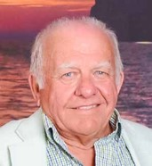
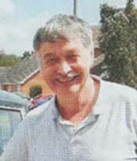

Long-standing Committee Members
Members who have served for ten years or more
On this page, you will find a catalogue of those members who have served the committee for ten years or more in various capacities. These are the people who have made the club what it is and allowed us to access a wealth of knowledge as well as parts to keep our cars on the road. They also organise gatherings and rallies where we can meet with other members and share experiences and enjoy the cars we drive.
The sister page to this page is a list of all committee members who have served the club since its inception in 1974. Without whom the club would not be what it is today, enabling us all to keep our cars on the road and enjoying a social get together at rallies around the country. To see this page, click this link: Honours Boards.
Please note: The dates used to show length of service are those that appear in editions of Flower Power through the years, and therefore may straddle a year boundary by a few months.

John Gogay (262) – 41 Years in 2024
| Spares Secretary |
1984–2012 |
| Flower Power Editor (*) |
2002–2005 (Acting) |
| Flower Power Editor (*) |
2006–2007 (Acting) |
| Ordinary Committee Member |
2013–Present |
(* In addition, John has published Flower Power for many years too.)

Paul Norton (462) – 29 Years in 2024
| Ordinary Committee Member |
1995–2009 |
| Flower Power Editor |
2009 (Acting) |
| Treasurer |
2009–Present |
Howard Pryor (551) – 29 Years in 2024
| Ordinary Committee Member |
1995–1996 |
| Rally Secretary |
1996–2004 |
| Vice Chairperson |
2004–2010 |
| Chairperson |
2010–2012 |
| Technical Officer |
2013–Present |
John Oaker (715) – 26 Years
Stephen Coulman (785) – 24 Years
| Archivist/Historian |
1997–2021 |
| Flower Power Editor |
1999–2000 (Joint) |
| Spares Secretary |
1999–2001 (Second-hand) |
| Flower Power Editor |
2000–2002 |
| Technical Officer |
2009–2011 |
| Technical Officer |
2012–2021 |
Peter Benfield (409) – 21 Years
| Vice Chairperson |
1993–1996 |
| Chairperson |
1996–2008 |
| Spares Secretary |
2001–2011 |
| Technical Officer |
2009–2011 |
| Life President |
2011–2015 |
Malcolm Barnsley (912) – 20 Years in 2024
| Technical Officer |
2004–Present |
| Regalia Secretary |
2012–2014 |
Phil Benson (490) – 17 Years
| Archivist/Historian |
1992–1994 |
| Flower Power Editor |
1992–2000 |
| Treasurer |
1993–2009 |
| Flower Power Editor |
2007–2009 |
Tony Booth (544) – 16 Years
| Ordinary Committee Member |
1988–1991 |
| Vice Chairperson |
1991–1993 |
| Chairperson |
1993–1996 |
| Vice Chairperson |
1996–2004 |
Reg ‘Keith’ Varney (3 – Hon) – 16 Years
| Founding Member |
1974 |
| Rally Secretary |
1975–1981 |
| Membership Secretary |
1978–1981 |
| Spares Secretary |
1981–1984 |
| Ordinary Committee Member |
1985–1992 |
Malcolm Bath (21) – 13 Years
| Ordinary Committee Member |
1975–1983 |
| Rally Secretary |
1983–1985 |
| Flower Power Editor |
1983–1986 |
| Technical Officer |
1986–1988 |
Maurice Wilkes (891) – 12 Years
| Ordinary Committee Member |
2004–2016 |
John Oglesby (407) – 11 Years
| Vice Chairperson |
1988–1991 |
| Rally Secretary |
1988–1992 |
| Chairperson |
1991–1993 |
| Ordinary Committee Member |
1993–1999 |

Peter Burdge (20) – 10 Years
| Archivist/Historian |
1976–1978 |
| Spares Secretary |
1978–1980 |
| Treasurer |
1978–1981 |
| Chairperson |
1983–1988 |
John Leslie (994) – 12 Years in 2024
| Technical officer (New Zealand) |
2012–Present |
John Castle (1091) – 12 Years
| Vice Chairperson |
2010–2012 |
| Rally Secretary |
2011–2013 |
| Chairperson |
2011–2022 |
| Regalia Secretary |
2014–2018 |
| Rally Secretary |
2018–2019 |
Edith Webber (364 – Hon) – 10 Years
| Ordinary Committee Member |
1983–1985 |
| Membership Secretary |
1985–1988 |
| Ordinary Committee Member |
1988–1993 |
Mike Webber (364) – 10 Years